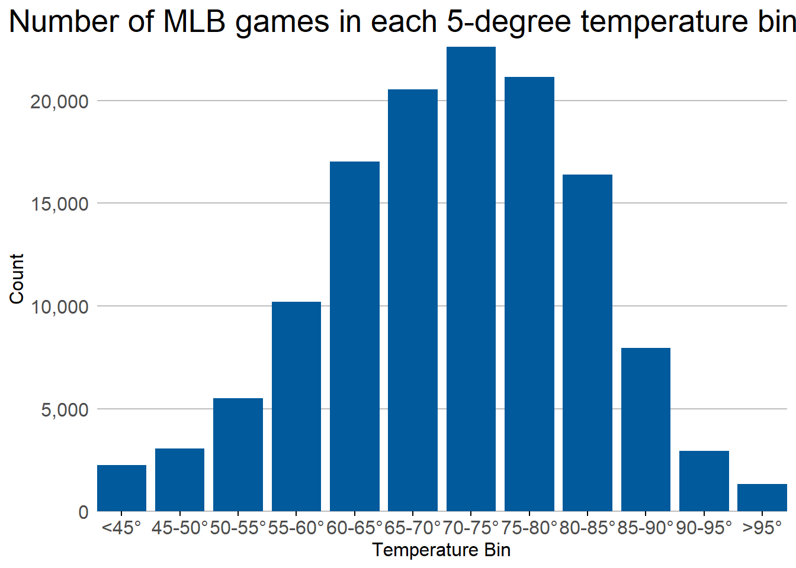
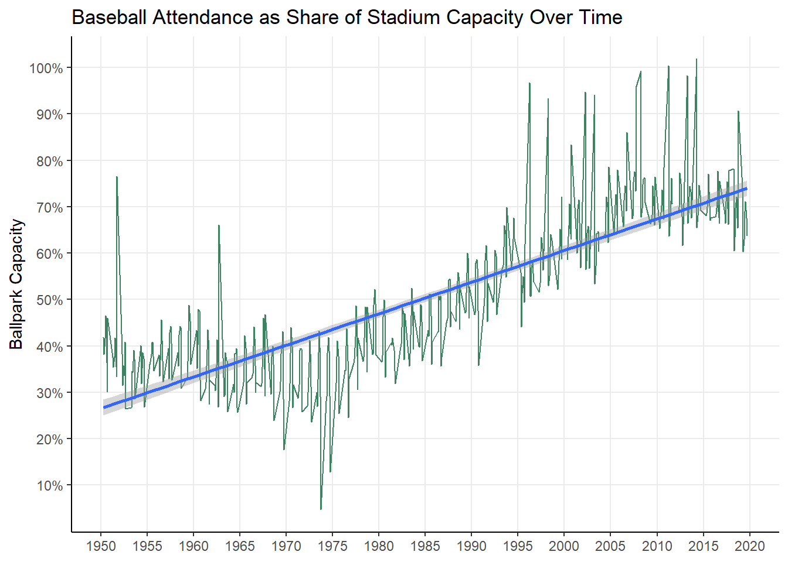

BASEBALL
This chart displays the distribution of MLB games across different temperature ranges from 1950 to 2021, revealing a clear preference for moderate to warm playing conditions. The data shows that baseball games are most frequently played in temperatures between 65-80°F, with the peak occurring in the 70-75°F range at over 22,000 games. Game frequency drops significantly at temperature extremes, with very few games played below 45°F or above 95°F, reflecting both player comfort and fan attendance considerations.
This analysis examines the relationship between temperature and baseball attendance by plotting mean capacity share (attendance/capacity) across temperatures ranging from 55°F to 85°F in 1-degree increments. The data reveals that attendance patterns vary with temperature, with the loess trend line showing how fan turnout responds to different weather conditions within this moderate temperature range. The visualization uses bar charts to show the actual mean capacity share at each temperature point, overlaid with a smooth trend line to highlight the overall temperature-attendance relationship, providing insights into optimal weather conditions for baseball game attendance.

The data shows a clear upward trend in ballpark capacity utilization from 1950 to 2020, with attendance as a percentage of capacity increasing from approximately 27% in 1950 to around 73% by 2020. The trend line reveals a steady linear increase over the 70-year period, though there is considerable year-to-year variation with some notable dips, particularly around the mid-1970s where capacity share dropped as low as 5-10%. The overall pattern suggests growing popularity of baseball attendance relative to stadium capacity, with the most dramatic improvements occurring from the 1980s onward when capacity utilization consistently exceeded 50%.